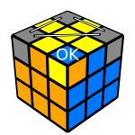
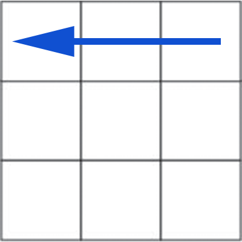
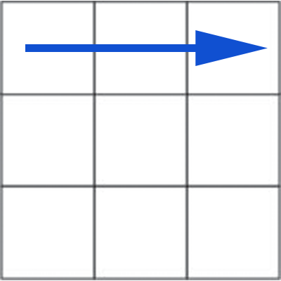
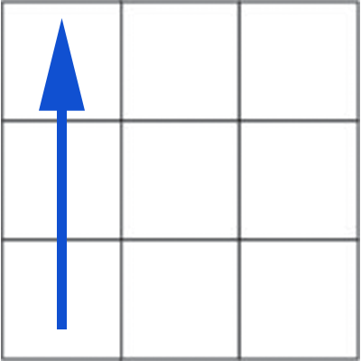
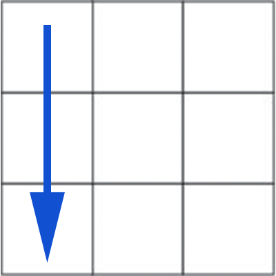

Step 7: Place Corners
Congratulations, you now have a cube with everything except 4 corners! In this step, we are going to place them in their correct positions (between the colors on that corner). We will worry about rotating them in the next step.
The algorithm we are going to use in this step will switch three of the corners around while leaving one corner in the same place. Our first step, then, is to find a corner that is in the correct position. Sometimes there may not be a corner already
in the correct spot. That's OK, just do this algorithm once and you should then be able to find a correctly placed corner. Once you find that corner, rotate the cube so that corner is in the center (see the following diagram) and do the algorithm
a couple more times until all the positions are correct.

Switching Corner Positions
This algorithm will switch 3 of the corner's positions and keep the position of one corner.






U R U' L' U R' U' L
Did You Get Lucky?
If you're lucky, the corners will already be rotated correctly when you place them and you will have a fully solved cube. If you got this, congratulations! Make sure to check out the next section anyways; you will definitely need it for future
solves.